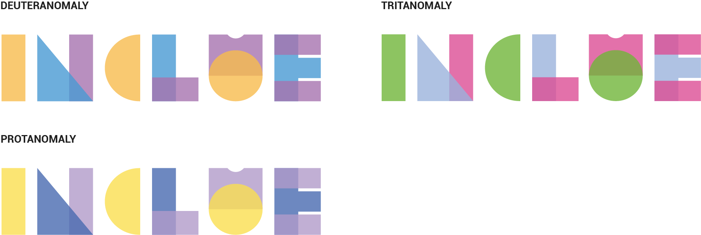

Branding
Branding
Now that we have refined the overall structure of the app we focused
on creating Inclue's branding to effectively communicate the brand
personality through the website.
Logo Design
Inclue was born from the search for a short name, which symbolized
the idea of the documentary in its form and content. The result
arose from the combination of the words "inclusive" and "clue",
which means inclusion and knowledge of the different experiences and
challenges associated with them, and the interactive experience from
which the user will leave with several clues on how to improve
digital accessibility.
After selecting the name, we began experimenting in Adobe
Illustrator. From simpler options where we try to make the union of
the two concepts perceptible, to more daring ones, in which we take
the concepts as a whole and explore the graphic component.

From the options above we decided to opt for the one in the bottom
right corner.
We presented our logo proposal to 36 people who were unaware of the
purpose of our project and came to the conclusion that 100% of those
questioned understood the word represented, always on the first try.
A recurring observation was the fact that it requires some
concentration to perceive it, however, it is always correct.
That being said, we made small adjustments to the letters that
people found it most difficult to decipher. Without deconstructing
the basic idea, in which the word was drawn only with geometric
shapes, we used miniatures of them to create more characteristic and
recognizable elements of the alphabet. Although subtle, these small
openings (visible in the letters N, C and U) make reading easier,
however, they allow us to maintain the initial aesthetic of the
logo.

Our logo was built based on the Roboto font. We subjected each
letter of the word Inclue to a geometrization process, using
different geometric shapes that were complemented with slight
transparencies and overlaps. Since the word itself already carries
the meaning of inclusion, the set of different shapes gives the
symbolism of union and strength, focusing on our main objective,
which is raising awareness through an experience accessible to
everyone. By adding these geometric elements to the selected
typography, we give it a differentiating character that can also be
transformed into graphic elements that can complement our identity
in the future.

We subjected the logo to a color contrast test using the Chrome
plugin Dalton. Thus, we obtained confirmation that there would be
sufficient contrast between the selected colors so that they would
be easily distinguishable by those suffering from color blindness.
In the image above, we can visualize this color conversion, with the
most frequent types of color blindness.
Style Guide
In order to appeal to a young audience, the image of our project is
colorful and full of personality. Through blue we intend to convey
the idea of security, stability and calm. Yellow contrasts with
blue, due to its vivacity and energy. Purple symbolizes wisdom and
knowledge and is used by brands that value human beings in
general.
In this case, the choice of colors was essential for the general
development of our project, since, according to our research, it
would be extremely important to select suitable colors in terms of
accessibility and play with contrast, making them more easily
distinguishable.
The selected colors create a good contrast between each other,
providing easy distinction between shades for those suffering from
color blindness. Although less common among the different types of
color blindness, the shade of purple we selected is the most
visually contrasting color for those suffering from Tritanopia.
The font used in the logo, Roboto, will also be used on the website.
Simple and sans serif, to facilitate reading for people with reduced
vision, dyslexia or cognitive and neurological difficulties.